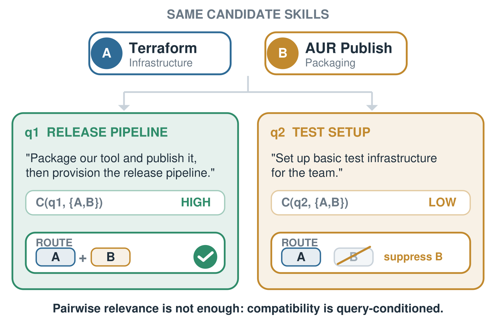
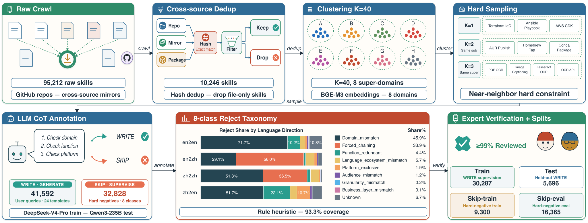
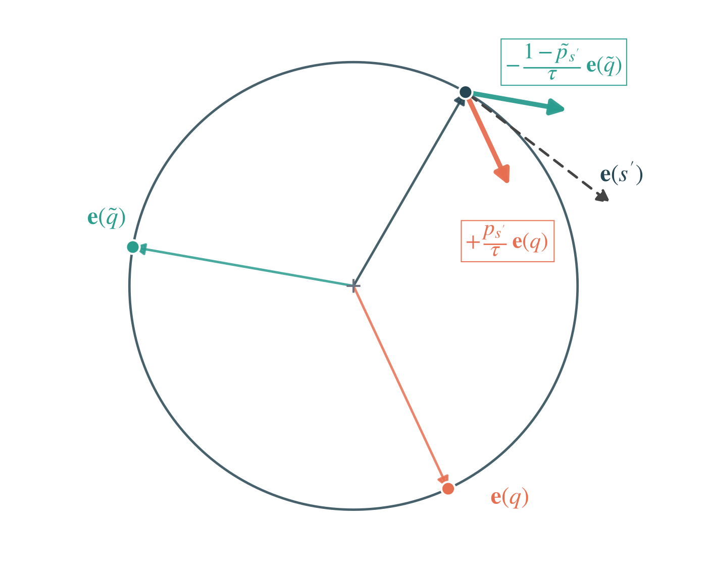

Contents · 8 sections
1What problem is it actually solving?2How the data is built: where the rejections come from3A new metric, Set-Compat: the whole set must be at the very top4Two-stage model: retrieval finds everything, reranking picks the right combination5Experiments: which conclusions hold up6Limitations as I see them7How a recommendation or search team could try this8One-line conclusion and assessmentSHARE
This paper is worth reading if you work on agent tool routing, skill retrieval or multi-item retrieval. It makes one often-ignored fact concrete: when you retrieve skills for an agent, each skill being relevant is not enough; the retrieved skills also have to work together for the current request. The core idea in one sentence: when an LLM synthesizes training queries, it first rejects a set of skill combinations that cannot form a natural request (the paper calls them SKIP, i.e. skip this combination). These rejections are normally thrown away; the authors keep them and feed them only to the cross-encoder reranker, never to the bi-encoder retriever. On the authors' own R3-Skill benchmark, reranking raises the share of queries whose full skill set lands in the top positions from 28.12% to 33.27%; using the same rejections as hard negatives for the bi-encoder instead drops it from 28.12% to 21.58%. The 0.6B retriever reaches 72.07% Hit@1, almost 10 points above an 8B general embedding model.
What problem is it actually solving?
A skill is a reusable capability description: a name, a summary and a long body (steps, API constraints, example code) that tells an agent how to complete a class of tasks. R3-Skill's 10,000-plus skills total 21.2M tokens, and the longest one has 31,571 tokens, so they cannot all go into the prompt. A routing layer has to pick a few first.
The difficulty is that retrieved skills get executed, not just read. The paper's Figure 1 gives an example that I reuse throughout:
| query | skills needed | correct result (illustrative) |
|---|---|---|
| q1: "Package and publish our tool, then set up the release pipeline" | Terraform infrastructure + AUR packaging | both, neither is optional |
| q2: "Set up a basic test environment for the team" | Terraform infrastructure only | AUR packaging should be pushed down |
AUR (Arch User Repository, the Arch Linux community package repository) packaging here means packaging software and uploading it to that repository. Under both queries its text relevance is not low. Ranking by per-skill relevance alone would likely put Terraform plus AUR packaging at the top for q2, and the agent would be handed instructions it cannot use. In document retrieval an extra relevant article is usually harmless; in skill routing an extra skill can bring redundant or conflicting instructions.

The authors write this as a decomposition: the probability that the full skill set lands in the top K is roughly the product of each skill's own top-K probability, times a query-dependent compatibility correction , where is the set of skills the query really needs. With fixed at 1 you are back to ordinary retrieval where each skill is judged independently. This paper supplies supervision for that correction term.
How the data is built: where the rejections come from
Figure 3 shows the pipeline: crawl skills from GitHub, deduplicate, cluster, sample combinations from neighborhoods, let an LLM decide whether to write a query, expert review, then split.

Why sample from neighborhoods? Two random skills, say online game networking plus legal drafting, obviously do not belong together, so rejecting them carries no information. The authors embed skills with BGE-M3, cluster with KMeans into 40 sub-clusters, then merge into 8 domains. Two-skill combinations come from the same sub-cluster, three-skill ones from the same domain. Even with topics this close, the LLM accepts only 56.3% of two-skill and 36.5% of three-skill combinations. This shows that topical closeness is far from forming a natural task.
The LLM answers in two steps. First it decides whether one user would naturally ask for these skills in a single request: every skill necessary, nothing forced, and something people really ask. If WRITE (write a query), it writes a 50–300 word (or character) query in one of six user voices, without naming any skill. If SKIP, it writes one sentence of reason. "Code Review" with "Systematic Code Review" is rejected because they overlap; "Rust reliability" with "Go security patterns" is rejected because one request will not span two language ecosystems.
A few settings decide whether the benchmark can be trusted:
| Setting | Content | Why it matters |
|---|---|---|
| Scale | 10,246 skills, 41,592 WRITE queries, 32,828 SKIPs | 15,791 queries need two or three skills |
| Language directions | en2en, en2zh, zh2en, zh2zh (skill language to query language) | only 246 raw Chinese skills; zh2en and zh2zh have about 1,150 queries each |
| Split | 8,196 train skills and 2,050 test skills, disjoint | a model cannot score by memorizing test skills |
| Generator | DeepSeek-V4-Pro for train, Qwen3-235B-A22B for test | lowers the risk of learning one generator's phrasing |
| Human review | all multi-skill test labels checked independently by 9 experts, initial disagreement under 5% | labels are trustworthy, but the queries are still synthetic |
The rejection reasons fall into 8 classes. 71.7% of en2en rejections are non-overlapping domains, while 56.0% of en2zh ones are "forced" (each skill is reasonable alone but unnatural in one request). As we will see, this difference matches where the reranker gains most.
A new metric, Set-Compat: the whole set must be at the very top
Among existing metrics, Recall@K measures what fraction of the needed skills appear in the top K; Comp@K, following the SkillRet benchmark as the paper describes it, checks whether the top K contain the whole needed set. Both allow the set to be scattered anywhere within the top K. The authors add Set-Compat, computed only on queries needing two or more skills: if a query needs n skills, look only at the top n positions, score 1 if they contain every needed skill and 0 otherwise.
is the model's ranking for query and is the indicator function. Worked example on q1 (illustrative): it needs Terraform and AUR packaging, so only the top 2 count. A ranking of Terraform, AUR packaging, Ansible scores 1; Terraform, Ansible, AUR packaging still has perfect Recall@3 but scores 0 on Set-Compat.
Why so strict? Agents usually load only the first few skills; every extra one takes context and may bring conflicting instructions. If the set only completes after position 10, Recall@15 looks great but the agent gains little.
Two-stage model: retrieval finds everything, reranking picks the right combination
R3 uses the usual retrieve-then-rerank structure. R3-Embedding, initialized from Qwen3-Embedding-0.6B, pulls 20 candidates from the whole library; R3-Reranker, initialized from Qwen3-Reranker-0.6B, rescores them. The division of labor is explicit: rejection signals go into the reranker only.
Retrieval: positives of the same query must not become each other's negatives
Bi-encoders are usually trained with InfoNCE: one positive per query, with other queries' positives in the batch as negatives. Multi-skill queries hit a trap. If q1's step uses only Terraform as the positive and AUR packaging appears in the batch as another query's positive, it becomes a negative for q1 and gets pushed away.
The fix has two parts. The main term is InfoNCE with the query's other positives (siblings) removed from the denominator. An extra term lets each sibling compete against the negatives on its own, pulling the query toward it:
is sibling-masked InfoNCE, the mean contrastive loss over siblings, , temperature . Single-skill queries have no siblings, so the loss reduces to standard InfoNCE. Hard negatives are mined offline with Qwen3-Embedding-8B: skills it ranks 20th to 50th with cosine similarity below 0.85. The cap avoids treating actually relevant skills as negatives.
Reranking: rejected partners get 1 point, correct answers get 3
The reranker uses the rejected combinations. For each WRITE query, the authors take skills from the same cluster neighborhood as its correct skills that appeared in rejected combinations, and call them SKIP partners. The source gives just these two conditions: same neighborhood as the correct skills, and appearing in some rejected combination; it does not require that the skill was rejected together with this query's correct skills. They are topically close to the correct skills but were judged unfit to be used together. Each training list holds 10 candidates: the needed skills, SKIP partners, and other top candidates from R3-Embedding. Needed skills get 3, SKIP partners 1, everything else 0, trained with ListNet: the softmax of these scores is the target distribution, and the softmax of model scores is pushed toward it.
A worked list (illustrative): 2 needed skills, 2 SKIP partners, 6 ordinary candidates. , , , total about 51.6. In the target, each needed skill gets about 0.39, each SKIP partner about 0.053, each ordinary candidate about 0.019.
These numbers show something easy to misread: SKIP partners are not the worst negatives in training; they sit below the correct answers and above ordinary candidates. That matches what SKIP means: the skill is not irrelevant, it just should not appear in this combination.
Why can the rejection signal not go into the bi-encoder?
A bi-encoder computes one vector per skill, shared by all queries. Take AUR packaging: under q2 it is a SKIP partner, so InfoNCE pushes its vector away from q2; under q1 it is a positive and gets pulled toward q1. One vector has to satisfy both, and it settles at a compromise where each query's push is partly cancelled by another query's pull. A cross-encoder has no such problem: it recomputes on query and skill together each time, giving AUR packaging a high score under q1 and a low one under q2 without conflict.

The appendix analyzes three more ways to put SKIP into a bi-encoder, all worse than InfoNCE. One example: a BCE loss that directly penalizes similarity between two skill vectors has a query-independent gradient, pushing Terraform and AUR packaging apart under every query, including q1 where both are needed. This part is derivation only, with no experimental numbers.
Experiments: which conclusions hold up
Main results on the R3-Skill test set, all rerankers using the same R3-Embedding top 20 (paper Table 4, excerpt, %):
| Model | Hit@1 | NDCG@10 | Recall@5 | Recall@10 | Set-Compat |
|---|---|---|---|---|---|
| BM25 | 6.04 | 8.82 | 9.93 | 12.41 | 0.40 |
| Qwen3-Embedding-8B (not fine-tuned) | 62.29 | 73.01 | 79.13 | 84.98 | 10.69 |
| SkillRet-Embedding-0.6B | 46.72 | 58.04 | 64.47 | 71.01 | 11.88 |
| R3-Embedding (0.6B) | 72.07 | 81.60 | 87.22 | 91.77 | 28.12 |
| + Qwen3-Reranker-0.6B | 68.08 | 79.54 | 86.45 | 92.12 | 17.82 |
| + SkillRouter-Reranker-0.6B | 67.98 | 77.65 | 82.57 | 88.77 | 24.36 |
| + R3-Reranker | 75.39 | 81.97 | 85.23 | 89.94 | 33.27 |
At retrieval, the 0.6B R3-Embedding beats the 8B general model by 9.78 points of Hit@1, and Recall@10 goes from 84.98% to 91.77%. Training on full skill text and the multi-positive structure helps more than scaling the model. BM25 almost fails completely, because queries may not name skills and half are cross-lingual.
At reranking, both general rerankers lower Set-Compat; Qwen3-Reranker drops it from 28.12% to 17.82%, which means a reranker that only learns whether a query matches a single document pulls topically close but redundant skills forward, which breaks combinations. R3-Reranker raises both Hit@1 and Set-Compat, at the cost of Recall@5 falling from 87.22% to 85.23% and Recall@10 from 91.77% to 89.94%. In other words, moving whole sets forward pushes individual correct skills further down.
The key ablation is paper Table 7 (%):
| Config | What changes | Hit@1 | Set-Compat |
|---|---|---|---|
| A retrieval | hard negatives mined by the 8B model (shipped) | 72.07 | 28.12 |
| B retrieval | SKIP partners replace hard negatives when available | 69.93 | 21.58 |
| C rerank | no SKIP partners | 72.31 | 29.50 |
| D rerank | SKIP partners, but randomly given to other queries | 75.11 | 29.70 |
| E rerank | SKIP partners paired with their original query (shipped) | 75.39 | 33.27 |
A versus B confirms that SKIP as bi-encoder negatives hurts, matching the derivation. C, D and E split the reranker gain. From C to D, Hit@1 rises about 2.8 points while Set-Compat barely moves; this comes from extra hard candidates in the list, regardless of pairing. D and E differ only in which query's list the SKIP partner goes into. E puts it back under the WRITE query it was picked for, the one whose correct skills share its neighborhood; D shuffles the same SKIP partners onto other queries. It keeps D and E matched on language direction, number of needed skills, candidate similarity distribution, skill length and training exposure, so the only difference is whether the pairing is right. From D to E, Hit@1 adds only 0.28 points while Set-Compat adds 3.57. This shows that SKIP partners teach set ranking only when placed with their own query; misplaced, they are just ordinary hard candidates. By my arithmetic on Table 7, of the 5.15-point Set-Compat gain from R3-Embedding to E, about 3.6 points come from correct pairing and reranker training itself adds only about 1.4.
Per-direction results (paper Table 5) support this. en2zh rejections are mostly "forced", and reranking lifts its Set-Compat from 18.97% to 25.64%, +6.67 points; en2en rejections are mostly non-overlapping domains that a bi-encoder already separates, and reranking adds only 3.46 points.
Transfer is tested on SkillRet, an independently built English benchmark with no rejection labels. R3-Embedding reaches 81.06% NDCG@10, 3.03 points above SkillRet-Embedding trained on SkillRet's own data; adding R3-Reranker gives 83.87%, improving all nine metrics. The general Qwen3 reranker again lowers every NDCG. What R3-Reranker learns is not specific to its home benchmark.
Limitations as I see them
First, Set-Compat is still low in absolute terms, and the small directions are unreliable. The best system reaches only 33.27%, so two thirds of multi-skill queries do not get the full set at the top. Numbers like zh2en from 45.45% to 63.64% and zh2zh from 50.00% to 60.00% look like ratios over about a dozen samples (my inference from the values), and the authors treat them as indicative only.
Second, "should these be used together" is an LLM judgment, not an execution outcome. SKIP comes from one DeepSeek-V4-Pro call, and test labels are expert-checked, but no experiment has an agent actually execute the skills to see whether missing or adding one makes the task fail. Queries are all synthetic, and the authors' own leakage audit finds 7.8% of en2en queries contain a substring of a skill name.
Third, the reranker trades top-position coverage for Set-Compat. Recall@5 falls about 2 points and Comp@5 from 85.31% to 83.41%. If the downstream agent can reliably load 5 or more skills, R3-Embedding alone may be the better choice, as the authors also suggest.
How a recommendation or search team could try this
- Check whether your synthetic-data pipeline is discarding rejections. Many teams ask the LLM to judge whether a combination makes sense before writing a query; storing SKIPs and reasons costs almost nothing.
- Add Set-Compat to offline evaluation, only on queries that need several tools or results. If your current reranker scores lower than pure retrieval on it, it is pulling close but redundant candidates forward, just like the general rerankers in the paper.
- Train the reranker with graded labels in three tiers, correct answer, rejected partner and ordinary candidate, starting with the paper's 3, 1, 0. Also run a control where rejected partners go to random other queries, to confirm the gain comes from pairing and not just extra hard candidates.
- Do not use rejections directly as bi-encoder hard negatives. Config B is a counterexample; keep offline-mined hard negatives and handle multiple positives becoming each other's negatives.
One-line conclusion and assessment
The most useful takeaway: when a model says during data synthesis that "these should not go together", that is query-dependent supervision, and only a model that sees query and candidate together can learn it.
| Dimension | Assessment |
|---|---|
| Problem importance | High. Skill and tool libraries keep growing, and retrieving a set that works together is a prerequisite step for agents |
| Method novelty | Medium. Retrieval and reranking are standard; the novelty is keeping rejections and using ablations to show which stage they belong in |
| Experimental evidence | Medium-high. The C/D/E controls in Table 7 are clean and there is cross-benchmark transfer, but queries are synthetic and nothing is executed end to end |
| Engineering cost | Low. Two 0.6B models; reranking 20 candidates takes up to about 92K input tokens per request, versus about 47.2M to score the whole library |
| Worth trying | Yes. Teams already synthesizing training data with LLMs get this signal almost for free |
| Fits | agent skill and tool routing, and any retrieval that must return a set of complementary results |
How did this read for you?
Hoot made a note. Thanks for the feedback.
One tap, no sign-in; tap again to undo. Only anonymous counts are kept, never who you are.
Discussion
Add experiment details, reproduction notes or a different take. Requires a GitHub sign-in.
Loading the discussion…